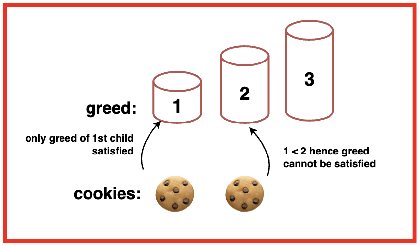
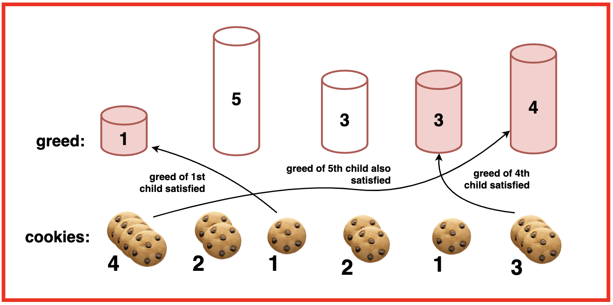
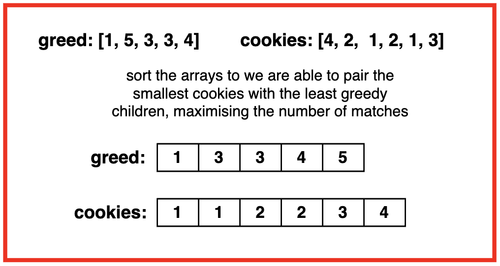
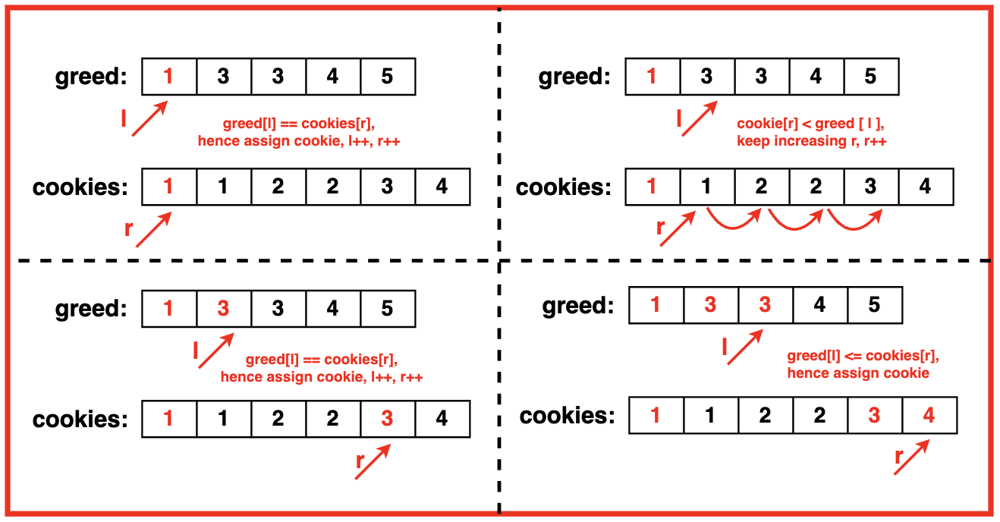

Problem Statement: Given two arrays representing children’s green factor and cookie sizes, the goal is to maximise the number of content children.
Each child i has a greed factor of g[i], which is the minimum size of a cookie that will make the child content. Each cookie j has a size of s[j]. If s[j] >= g[j], we can assign cookie j to child i, making the child content. Each child can only receive one cookie.
Examples
Example 1:Input:g = [1, 2, 3], s = [1, 1]
Output: 1Explanation: We have 3 children and 2 cookies. The greed factors of the 3 children are 1, 2, 3. The sizes of the 2 cookies are both 1. We can only make the child with greed factor 1 content. Hence, the output is 1.Example 2:Input:g = [1, 5, 3, 3, 4], s = [4, 2, 1, 2, 1, 3]
Output: 0Explanation: You have 5 children and 6 cookies. The greed factors of the 5 children are 1, 5, 3, 3, and 4. The sizes of the 6 cookies are 4, 2, 1, 2, 1, and 3.
The child with greed factor 1 can be satisfied with the cookie of size 1.
One child with greed factor 3 can be satisfied with the cookie of size 3.
One child with greed factor 4 can be satisfied with the cookie of size 4.
Hence, the output is 3. 
Disclaimer: Don’t jump directly to the solution, try it out
yourself first.
Optimal Approach
Algorithm / Intuition
Greedy Algorithms are approached to solve problems by making the current best choice at each stage with the hope of getting the best answer overall as well. At each step of the algorithm, we choose the best possible option available without considering the consequences of the choice in future steps.
To solve this question, we sort the greed and cookies array to easily make decisions about which cookie to assign to which child. We then iterate over the sorted arrays comparing elements and assigning the smallest available cookie with the least greedy child.
This way we are able to leave larger cookies for potentially gredier children so that we are able to maximise the overall satisfaction.
Algorithm:
Step 1:Sort both the greed and cookieSize array. By sorting, we are able to pair the smallest cookies with the least greedy children, maximising overall content.

Step 2: Use two pointers, l and r to iterate through the cookieSize and greed arrays. These pointers represent the positions of the smallest available cookie and the least greedy child.
Step 3:
We iterate through the arrays, checking if the current cookie can satisfy the current child’s greed. Ie. cookieSize[l] >= greed[r].
If the current cookie can satisfy the current child’s greed, we move to the next child.
Regardless of whether a child is satisfied or not, we move to the next cookie.

Step 4: At the end, the value of r, represents the number of children that were satisfied as we increment it each time a child’s greed is satisfied. We return this value as the total number of satisfied children.
Code
#include <vector>
#include <algorithm>
#include <iostream>
using namespace std;
// Function to find the maximum
// number of content children
int findContentChildren(vector<int>& greed, vector<int>& cookieSize) {
// Get the size of
// the greed array
int n = greed.size();
// Get the size of
// the cookieSize array
int m = cookieSize.size();
// Sort the greed factors in ascending
// order to try and satisfy the
// least greedy children first
sort(greed.begin(), greed.end());
// Sort the cookie sizes in ascending
// order to use the smallest cookies first
sort(cookieSize.begin(), cookieSize.end());
// Initialize a pointer for the
// cookieSize array, starting
// from the first cookie
int l = 0;
// Initialize a pointer for the
// greed array, starting from
// the first child
int r = 0;
// Iterate while there are
// cookies and children
// left to consider
while (l < m && r < n) {
// If the current cookie can
// satisfy the current child's greed
if (greed[r] <= cookieSize[l]) {
// Move to the next child,
// as the current child is satisfied
r++;
}
// Always move to the next cookie
// whether the current child
// was satisfied or not
l++;
}
// The value of r at the end of
// the loop represents the number
// of children that were satisfied
return r;
}
int main() {
vector<int> greed = {1, 5, 3, 3, 4};
vector<int> cookieSize = {4, 2, 1, 2, 1, 3};
cout << "Array Representing Greed: ";
for(int i = 0; i < greed.size(); i++){
cout << greed[i] << " ";
}
cout << endl;
cout << "Array Representing Cookie Size: ";
for(int i = 0; i < cookieSize.size(); i++){
cout << cookieSize[i] << " ";
}
int ans = findContentChildren(greed, cookieSize);
cout << endl << "No. of kids assigned cookies "<< ans;
cout << endl;
return 0;
}
import java.util.Arrays;
public class AssignCookies {
// Function to find the maximum
// number of content children
public static int findContentChildren(int[] greed, int[] cookieSize) {
// Get the size of
// the greed array
int n = greed.length;
// Get the size of
// the cookieSize array
int m = cookieSize.length;
// Sort the greed factors in ascending
// order to try and satisfy the
// least greedy children first
Arrays.sort(greed);
// Sort the cookie sizes in ascending
// order to use the smallest cookies first
Arrays.sort(cookieSize);
// Initialize a pointer for the
// cookieSize array, starting
// from the first cookie
int l = 0;
// Initialize a pointer for the
// greed array, starting from
// the first child
int r = 0;
// Iterate while there are
// cookies and children
// left to consider
while (l < m && r < n) {
// If the current cookie can
// satisfy the current child's greed
if (greed[r] <= cookieSize[l]) {
// Move to the next child,
// as the current child is satisfied
r++;
}
// Always move to the next cookie
// whether the current child
// was satisfied or not
l++;
}
// The value of r at the end of
// the loop represents the number
// of children that were satisfied
return r;
}
public static void main(String[] args) {
int[] greed = {1, 5, 3, 3, 4};
int[] cookieSize = {4, 2, 1, 2, 1, 3};
System.out.print("Array Representing Greed: ");
for (int i = 0; i < greed.length; i++) {
System.out.print(greed[i] + " ");
}
System.out.println();
System.out.print("Array Representing Cookie Size: ");
for (int i = 0; i < cookieSize.length; i++) {
System.out.print(cookieSize[i] + " ");
}
int ans = findContentChildren(greed, cookieSize);
System.out.println();
System.out.println("No. of kids assigned cookies " + ans);
System.out.println();
}
}
from typing import List
# Function to find the maximum
# number of content children
def findContentChildren(greed: List[int], cookieSize: List[int]) -> int:
# Get the size of
# the greed array
n = len(greed)
# Get the size of
# the cookieSize array
m = len(cookieSize)
# Sort the greed factors in ascending
# order to try and satisfy the
# least greedy children first
greed.sort()
# Sort the cookie sizes in ascending
# order to use the smallest cookies first
cookieSize.sort()
# Initialize a pointer for the
# cookieSize array, starting
# from the first cookie
l = 0
# Initialize a pointer for the
# greed array, starting from
# the first child
r = 0
# Iterate while there are
# cookies and children
# left to consider
while l < m and r < n:
# If the current cookie can
# satisfy the current child's greed
if greed[r] <= cookieSize[l]:
# Move to the next child,
# as the current child is satisfied
r += 1
# Always move to the next cookie
# whether the current child
# was satisfied or not
l += 1
# The value of r at the end of
# the loop represents the number
# of children that were satisfied
return r
if __name__ == "__main__":
greed = [1, 5, 3, 3, 4]
cookieSize = [4, 2, 1, 2, 1, 3]
print("Array Representing Greed: ", end="")
for g in greed:
print(g, end=" ")
print()
print("Array Representing Cookie Size: ", end="")
for c in cookieSize:
print(c, end=" ")
print()
ans = findContentChildren(greed, cookieSize)
print(f"\nNo. of kids assigned cookies {ans}")
// Function to find the maximum number of content children
function findContentChildren(greed, cookieSize) {
// Get the size of the greed array
let n = greed.length;
// Get the size of the cookieSize array
let m = cookieSize.length;
// Sort the greed factors in ascending order
greed.sort((a, b) => a - b);
// Sort the cookie sizes in ascending order
cookieSize.sort((a, b) => a - b);
// Initialize pointers
let l = 0; // Pointer for cookieSize array
let r = 0; // Pointer for greed array
// Initialize variable to count satisfied children
let satisfiedChildren = 0;
// Iterate while there are cookies and children left to consider
while (l < m && r < n) {
// If the current cookie can satisfy the current child's greed
if (greed[r] <= cookieSize[l]) {
// Move to the next child
r++;
// Increment count of satisfied children
satisfiedChildren++;
}
// Move to the next cookie
l++;
}
// Return the number of children that were satisfied
return satisfiedChildren;
}
// Main function to test the findContentChildren function
function main() {
let greed = [1, 5, 3, 3, 4];
let cookieSize = [4, 2, 1, 2, 1, 3];
console.log("Array Representing Greed: " + greed.join(" "));
console.log("Array Representing Cookie Size: " + cookieSize.join(" "));
let ans = findContentChildren(greed, cookieSize);
console.log("No. of kids assigned cookies: " + ans);
}
// Call the main function to test the code
main();
Output
Array Representing Greed: 1 5 3 3 4
Array Representing Cookie Size: 4 2 1 2 1 3
No. of kids assigned cookies 3
Complexity Analysis
Time Complexity: O(N logN + M logM + M)
where N is the length of the greedy array, M is the length of the cookies array. To sort the greedy and cookies array, the complexity is O(N logN) and O(M logM).
After sorting, we iterate over the arrays at most M times as M is the total number of cookies.
Since each child and each cookie is considered at most once, the time complexity of this part is linear in terms of the size of the cookie array, which is O(M).
Space Complexity: O(1) as the algorithm uses only a constant amount of extra space regardless of the size of the input array. It does not require any additional data structures that scale with the input size.
Video Explanation
Special thanks to Gauri Tomar for contributing to this article on takeUforward. If you also wish to share your knowledge with the takeUforward fam, please check out this article